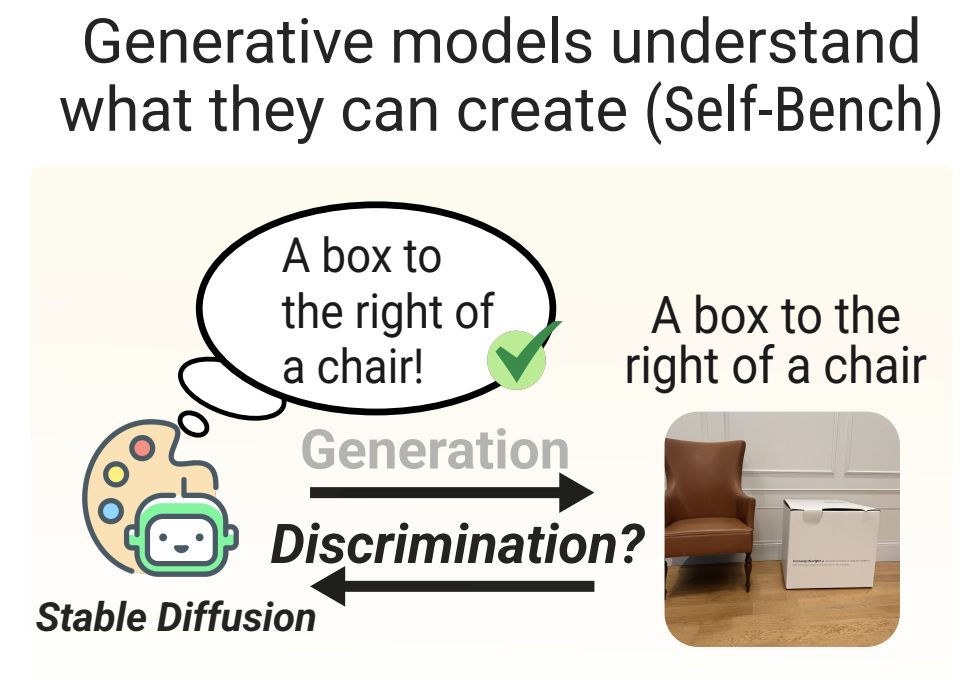
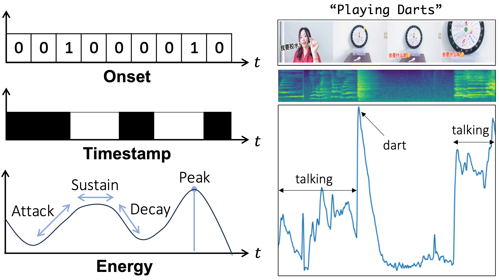
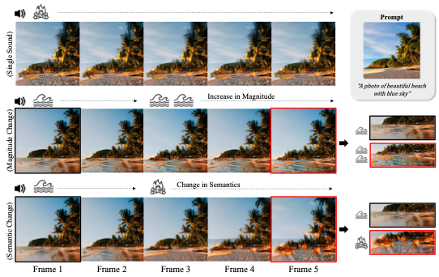
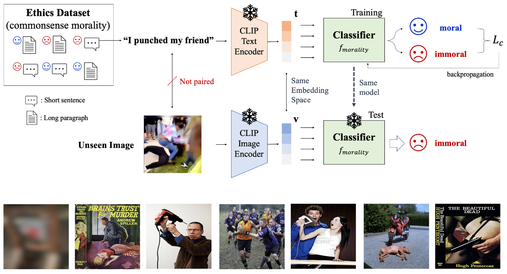

💡 Open Positions for HiWi / Thesis supervision
I am currently looking for motivated students to work with me on research topics related to my research interests. Students with a strong background in machine learning and Python are especially welcome.
If you are interested, please feel free to contact me via
email with a short introduction, and also apply through this page.
|
|

|
Diffusion Classifiers Understand Compositionality, but Conditions Apply
Yujin Jeong*,
Arnas Uselis*,
Seong Joon Oh,
Anna Rohrbach
NeurIPS D&B Track, 2025
*equal contributions
Paper / Code
|
|

|
Read, Watch and Scream! Sound Generation from Text and Video
Yujin Jeong,
Yunji Kim,
Sanghyuk Chun,
Jiyoung Lee
AAAI, 2025
code & project page / paper / webinar
|
|

|
The Power of Sound (TPoS): Audio Reactive Video Generation with Stable Diffusion
Yujin Jeong,
Wonjeong Ryoo,
Seung Hyun Lee,
Wonmin Byeon,
Sangpil Kim,
Jinkyu Kim
ICCV, 2023
code & project page / paper
|
|

|
Zero-shot Visual Commonsense Immorality Prediction
Yujin Jeong,
Seongbeom Park,
Suhong Moon,
Jinkyu Kim
BMVC, 2022
code & dataset / paper
|
|
{kind=link}